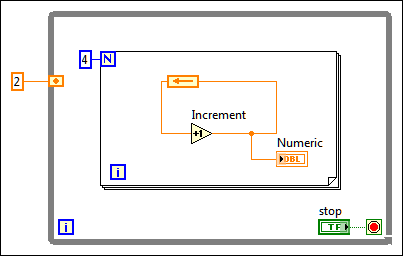

By default, the Feedback Node globally initializes when the VI compiles or loads. However, you also can configure the node to initialize on loop execution.
Complete the following steps to move the initializer terminal to the left edge of a loop, which resets the input value each time a loop executes.
After you move the initializer terminal to the left edge of a loop, you can move the initializer terminal back to its original location inside the loop by right-clicking the initializer terminal and selecting Globally Initialize»Initialize On Compile Or Load from the shortcut menu. Select Move Initializer One Loop In to move the initializer to the next loop in.
If you move the initializer terminal to the edge of the outermost loop, select Move Initializer One Loop In to move the initializer terminal to the next loop in.
If you configure the Feedback Node to initialize when a loop executes, the Feedback Node initializes before the first iteration of every loop execution. The initializer terminal changes to the icon, which changes color depending on the data type you wire to the terminal, as shown on the loop in the following figure.
In the previous block diagram, although the Feedback Node is in the For Loop, the initializer terminal is on the edge of the outermost While Loop. Thus, the Feedback Node initializes to the input value 2 every time the While Loop executes, whereas the outcome of the Increment function builds on previous values for each For Loop execution. Separating the Feedback Node and initializer is useful in nested Case structures when you want the Feedback Node to execute only in certain cases.